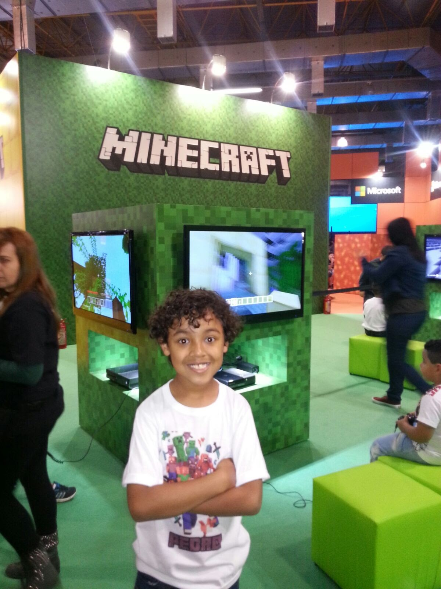
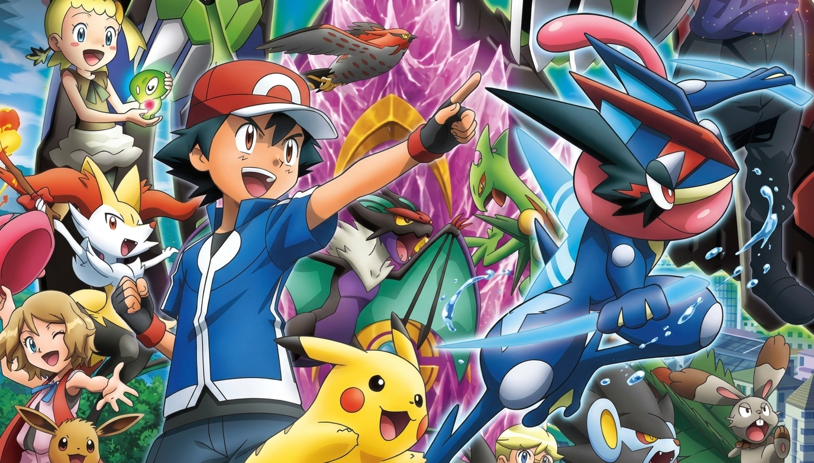
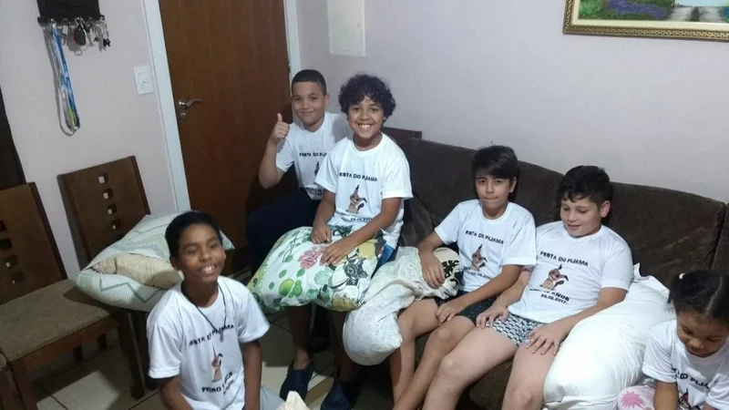
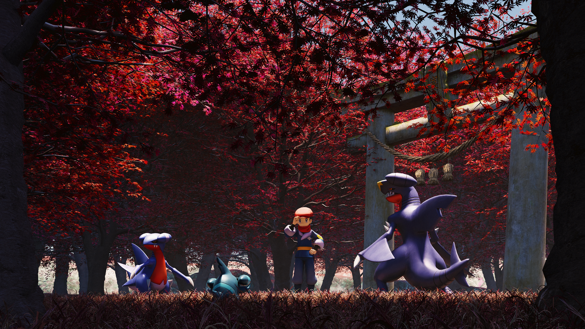

Do anime em 2013 aos mods e ao Switch: os marcos que transformaram curiosidade em paixão.
Eu tinha o computador e o Minecraft, e ouvia falar de Pokémon como algo de turnos e entediante. Foi o anime que mostrou a essência da franquia e despertou a vontade de jogar.
Black & White, Cartoon Network
Acompanhar X & Y me conquistou de vez. O mod Pixelmon virou febre no Minecraft e a vontade de jogar ficou enorme, mas consoles e jogos eram caros no Brasil.
X & Y e o sonho do Pixelmon
Achei alternativas: o MMO Pokémon Planet e o Brick Bronze, no Roblox, que era pago. Abri a página dele todos os dias por um ano, e em outubro de 2016 o cadeado sumiu. Foram dois anos ao lado dos meus amigos, até a remoção por direitos autorais em 2018.
1 ano de espera, 2 anos de aventura
Joguei finalmente um título oficial no meu Nintendo Switch e cheguei a 90% da história de Legends: Arceus em uma só noite. Com o computador próprio, realizei o sonho do Pixelmon e conheci o Cobblemon.
O primeiro título oficial no Switch